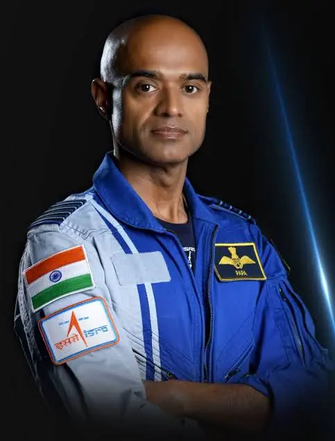
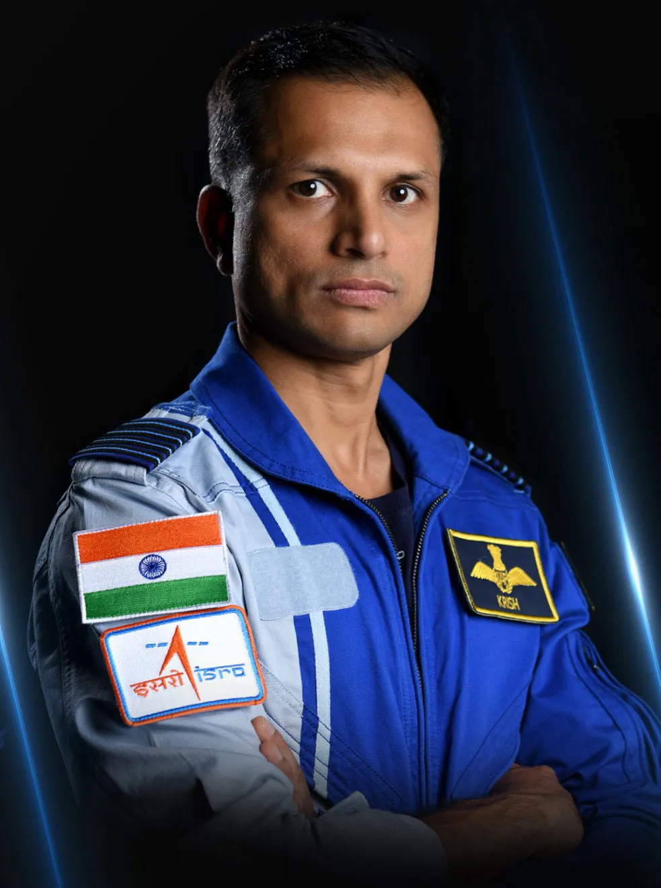
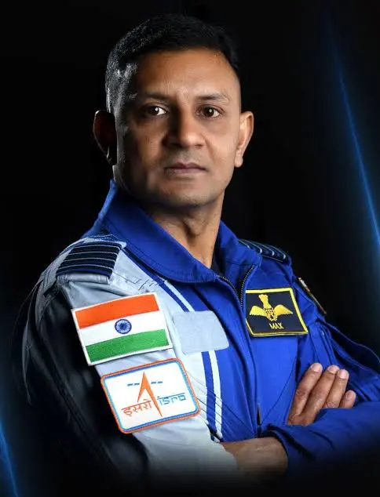
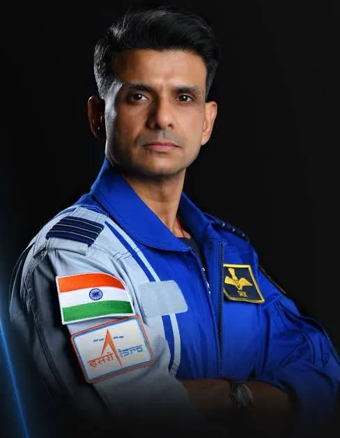
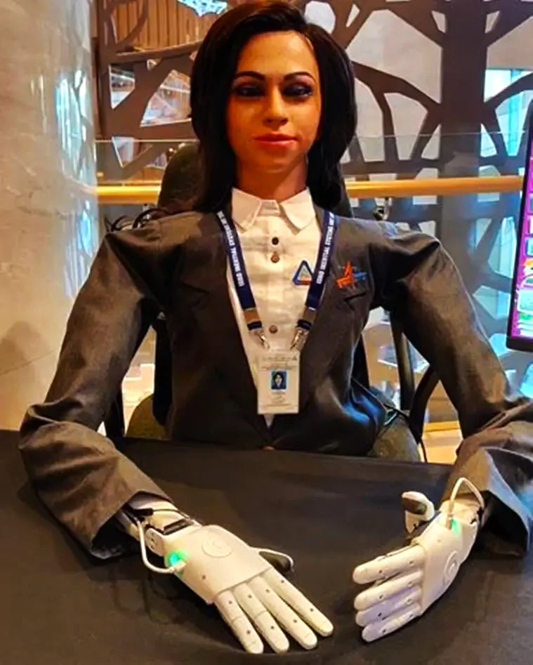
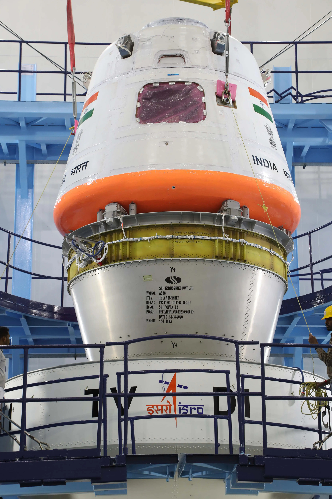
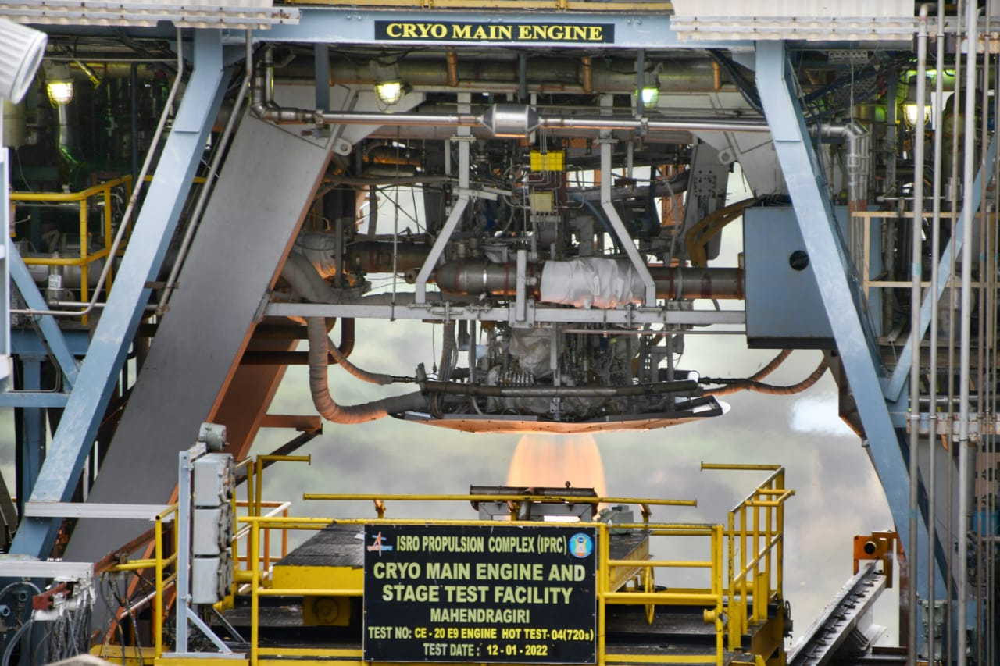
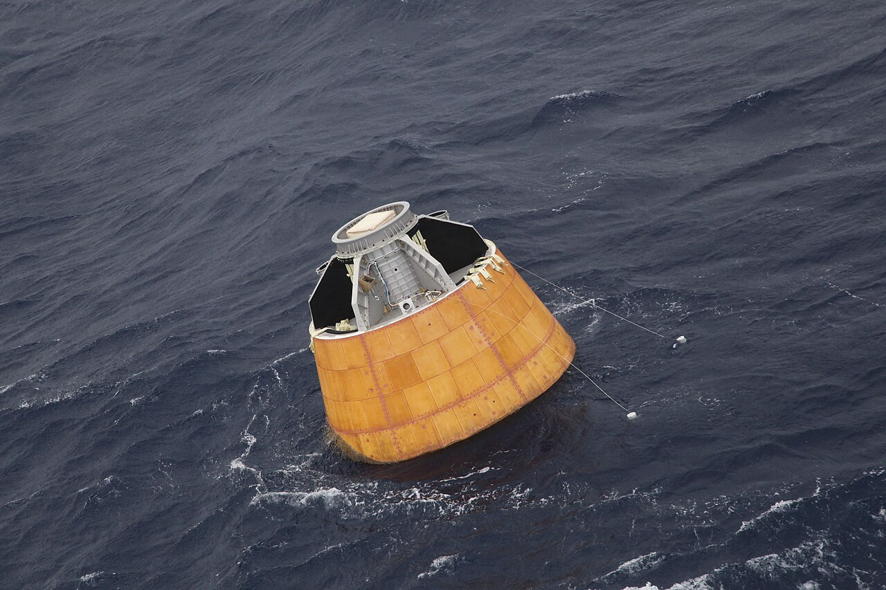
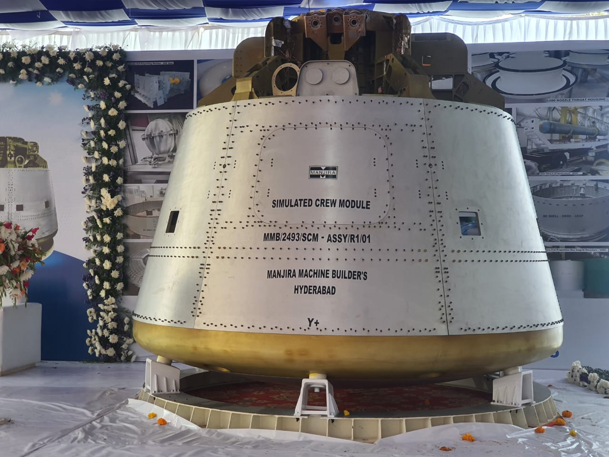

.jpg)
India's first crewed orbital spacecraft. Three astronauts. 400 kilometres above Earth. The mission that will define a generation — and prove that India belongs among the stars.
Watch: Gaganyaan Mission VideoAs of April 30, 2026, the G1 mission has entered final pad integration. ISRO Chairperson Dr. V. Narayanan confirmed on April 8 that the mission is 90% complete. Integration of Vyommitra onto the spacecraft was completed on April 28, 2026. Following this, the G1 Mission Readiness Review (MRR) was formally cleared on April 29, 2026 — the official green light for launch pad rollout. The official launch date announcement is expected in early May.
G1 will test the full mission profile from launch to splashdown. Key systems under validation include the ablative heat shield performance during re-entry at ~8 km/s, the parachute deployment system (already tested at 600 km/h on a rocket sled at TBRL, Chandigarh), and the crew module structural integrity under qualification-level aerodynamic loads.
Recovery will be led by the Indian Navy and Indian Coast Guard in the Arabian Sea off Gujarat's coast. For G1, ISRO is also deploying chartered ships equipped with specialized tracking terminals in the Pacific and North Atlantic Oceans — ensuring continuous data monitoring and telemetry coverage during the uncrewed re-entry phase across all global corridors.
Gaganyaan — from Sanskrit: gagana (celestial) + yāna (vehicle) — is India's first human spaceflight programme. The mission will carry three Indian astronauts to low Earth orbit at 400 km altitude. The initial H1 mission is planned for 3 days, with the vehicle designed to support up to 7 days in orbit — leaving room to extend future missions as India's human spaceflight experience grows.
When it launches, India will become only the fourth nation in history to independently send humans to space — after the Soviet Union, the United States, and China. No other country has done it. And India will do it with a budget smaller than most Hollywood blockbusters.
The programme was formally sanctioned in 2009 and commissioned in 2017 with an initial budget of ₹10,000 crore — since revised to ₹20,000 crore to cover the expanded scope including the Bharatiya Antariksh Station goals. It represents not just a milestone, but a proof of concept — that India can do anything in space it sets its mind to.
Four astronaut-designates have been selected and trained — all Indian Air Force pilots. Three will fly the crewed mission. One flew to the ISS on Axiom-4 in 2025 as preparation.




Before any human flies on Gaganyaan, India's half-humanoid robot — Vyommitra (from Sanskrit: vyoma = space + mitra = friend) — will make the journey first. Developed by ISRO, Vyommitra is specifically designed to fly on the G1 and G2 uncrewed test missions.
Vyommitra is not just a showpiece. She performs real mission-critical functions — operating switches and panels, monitoring the cabin environment, detecting system anomalies, and responding to queries. Her data directly informs what happens when humans fly.
Most critically, Vyommitra will test the life support system — the oxygen supply, CO₂ scrubbing, cabin pressure regulation, and temperature control — in the actual microgravity environment of orbit. No simulation on Earth can fully replicate this. Vyommitra does it for real, so the human crew doesn't have to find out the hard way.
She is also designed to detect and flag any off-nominal readings in the crew module systems — essentially acting as a co-pilot without a heartbeat.

The Gaganyaan spacecraft — called the Orbital Module — consists of two parts: the Crew Module where astronauts live, and the Service Module that powers the mission.
The Crew Module is a double-walled pressurized capsule with an Earth-like environment for the crew. It houses crew interfaces, life support systems, avionics, and the deceleration system for re-entry.
The Service Module provides propulsion, thermal control, power, and deployment mechanisms while in orbit. It separates from the Crew Module before re-entry.
A critical safety feature is the Crew Escape System (CES) — high-burn-rate solid motors that can pull the Crew Module to safety within milliseconds if anything goes wrong during launch.
Equally important is the Flight Crew Emergency Egress System (FCEES) — a zipline-based rapid evacuation mechanism installed at the launch pad. If an emergency occurs before liftoff, astronauts can exit the tower at speed and reach a safe bunker in seconds. As of April 2026, ISRO has been actively highlighting and refining this ground-side safety infrastructure alongside the in-flight escape systems.
ISRO's most powerful rocket — the LVM3 — has been specially modified and human-rated for Gaganyaan. Every system has been redesigned to meet human safety standards, and it's been rechristened the Human Rated LVM3 (HLVM3).
The rocket consists of three stages: solid fuel strap-on boosters (S200), liquid propellant core stage (L110), and a cryogenic upper stage (C25) using liquid hydrogen and liquid oxygen — the same technology used by the world's most powerful rockets.
The first human-rated Vikas engine for Gaganyaan was delivered by Godrej Enterprises Group in November 2025 — a milestone that shows how India's private sector is now part of the space journey.
Swipe or click arrows to browse. Click any photo to zoom.





